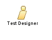

| Роль: Test Designer |
 |
|
 |
Roles organize the responsibility for performing tasks and developing work products into logical groups. Each role can be assigned to one or more people, and each person can fill one or more roles. When staffing the Test Designer role, you need to consider both the skills required for the role and the different approaches you can take to assigning staff to the role. In some development cultures this role is called the Test Architect, Test Automation Architect or Test Automation Specialist. We recommend reading Kaner, Bach & Pettichord's Lessons Learned in Software Testing, which contains an excellent collection of important concerns for test teams. Of special interest to the Test Designer role are the chapters on Testing techniques, Test automation and Test planning and strategy. |
| Квалификация | The appropriate skills and knowledge for the Test Designer role include:
This role has these primary responsibilities:
|
|---|---|
| Подходы к назначению | The Test Designer role can be assigned in the following ways:
|
Licensed Materials - Property of IBM |